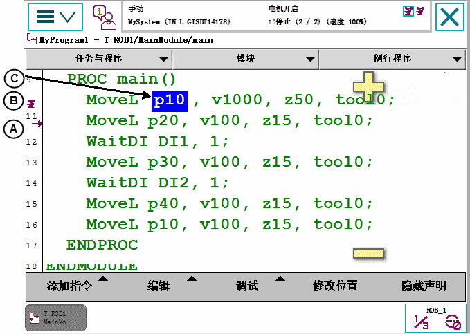

在所有的操作模式中，程序都可以步进或步退执行。
执行步退受到限制，请参阅技术参考手册 - RAPID Overview获得更多详情。
此部分详细介绍了如何选择单步执行模式。单步模式分为三种：步进、步过和动作单步。
操作
Information
1
使用"快速设置"菜单选择单步执行模式。
参见Quickset（快速设置）菜单，Step Mode（步进模式）。
此部分详细介绍了如何步进和步退。
如果想要...
请按下...
前移
FlexPendant 上的 Forward（步进）按钮
后移
FlexPendant 上的 Backward（步退）按钮
步退执行有以下限制：
当通过 MoveC 指令执行步退时，程序执行不会在圆周点停止。
步退时无法退出IF、FOR、WHILE 和 TEST 语句。
到达某一例行程序的开头时将无法以步退方式退出该例行程序。
有些影响动作的指令不能以步退方式执行（例如ActUnit、ConfL 和 PDispOn）。 如果企图执行这些步退操作，就会出现一个警告框，告知您无法执行此操作。
当步进执行时，在程序代码中，程序指针指示下一步应该执行的程序指令，动作指针指示机器人的动作指令。
当步退执行时，在程序代码中，程序指针指示的动作指令优先于动作指针指示的动作指令。当程序指针和动作指针指示不同的动作指令时，动作将会移动到程序指针指示的目标处，并使用动作指针指示的类型和速度.
下述示例解释了如何通过动作指令执行步退。程序指针和动作指针可以帮助您跟踪RAPID的执行位置和机器人的位置。
MoveL、MoveJ和MoveC均是RAPID中的移动指令，请参见技术参考手册 - RAPID指令、函数和数据类型。

A
程序指针
B
动作指针
C
加亮字符表示 robtarget 正在移向的位置或已经到达的位置。
当...
那么...
步进到机器人位于p50时
动作指针将指示p50，程序指针则指明下一条动作指令（MoveL p60）
按下 Backward（步退）按钮
机器人不会移动，但程序指针将移动到上一条指令（MoveC p30, p40）。也就是说，再次按下Backward（步退）时，将执行这条指令。
再次按下 Backward（步退）按钮
机器人将以线性方式移动到p40，速度为v300。
移动的目标（p40）取自指令MoveC。移动的类型（线性）和速度取自下一条指令（MoveL p50）。
动作指针指示p40，程序指针向上移动到MoveL p20。
机器人通过p30迂回移动到p20，速度为v1000。
移动的目标p20取自指令MoveL p20。移动的类型（迂回）、圆周点（p30）和速度都取自指令MoveC。
动作指针指示p40，程序指针向上移动到MoveL p10。
机器人线性移动到p10，速度为v1000。
动作指针指示p10，程序指针向上移动到MoveJ p10。
按下 Forward（步进）按钮
机器人静止，程序指针移动到下一条指令（MoveL p20）。
再次按下 Forward（步进）按钮
机器人移动到p20，速度为v1000。